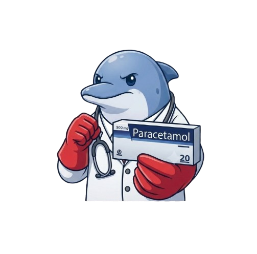
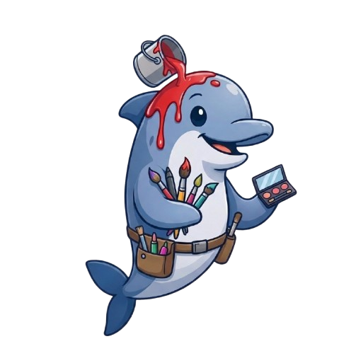
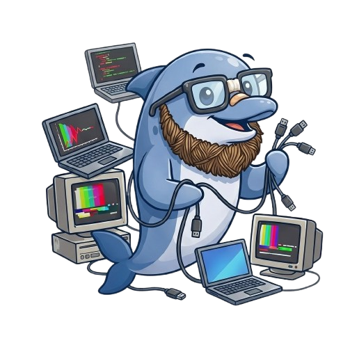
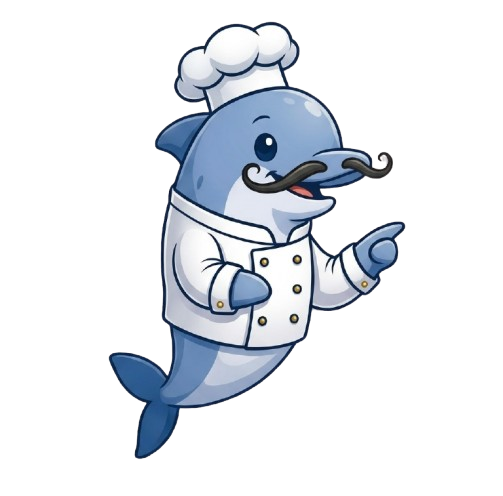

Consejos para elegir tu carrera
Ideas cortas para que tomes tu decisión con más calma y menos presión.


No hay una sola respuesta correcta
Muchas carreras pueden llevarte a un mismo tipo de vida que quieres. Explora antes de presionarte por decidir "la" carrera perfecta.

Habla con gente que ya estudia eso
Nadie te va a dar un panorama más real que alguien que ya está en esa carrera. Pregúntale qué le gusta y qué no.

Investiga el campo laboral
No solo veas el nombre de la carrera: investiga a qué se dedica la gente que la estudia, y si eso te emociona.

Está bien repetir la encuesta
Tus intereses pueden cambiar. Si algo no te convenció, vuelve a hacer la encuesta más adelante y compara resultados.
Pide otras opiniones, pero decide tú
Escucha a tu familia y maestros, pero la carrera la vas a vivir tú. Que la decisión final sea tuya.
No dejes los trámites para el final
Las convocatorias de admisión tienen fechas límite estrictas. Prepara tu documentación con tiempo.